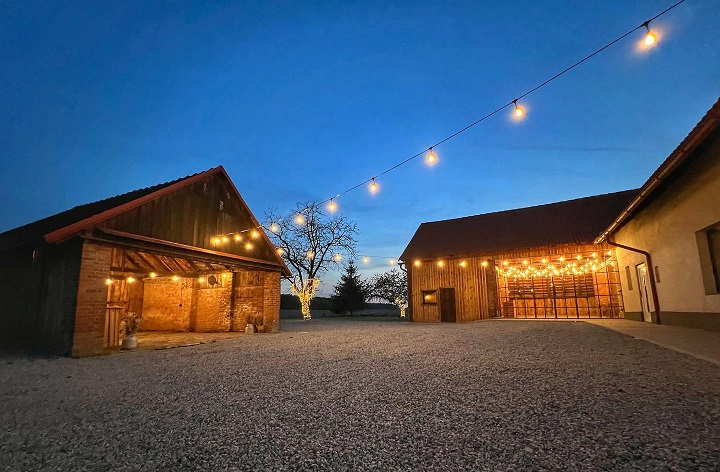
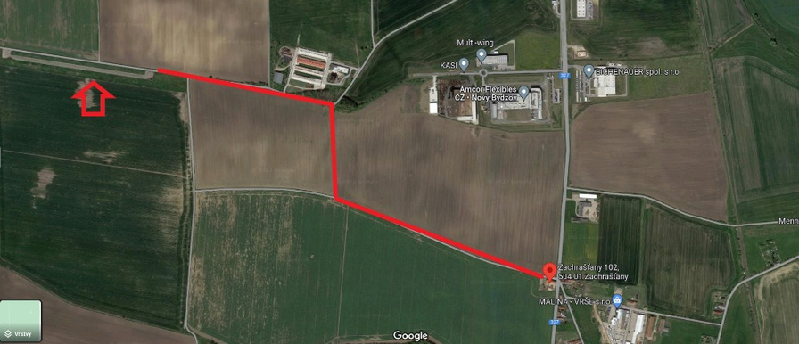
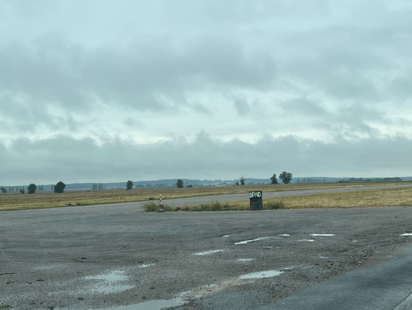

2.6.2023, 13:00
U Dvou Stodol (Zachrašťany)
UŽ SE NEMUSÍTE PTÁT, KDY SE KONEČNĚ BUDEME BRÁT!
Seznámili jsme se v březnu 2015 a tenkrát ani jednoho z nás nenapadlo, že bychom mohli být spolu. Ale jak už to tak bývá, vesmír měl s námi jiné plány. Jak s oblibou říkáme, v začátcích nebyla naše láska procházka růžovou zahradou, ale trnitými růžemi. Díky tomu můžeme říct, že je opravdová a krásnější. V únoru 2020 se nám narodil náš milovaný syn Sebík a na Silvestra téhož roku, pár minut po půlnoci, přišla žádost o ruku. Rádi bychom si před vámi řekli naše ANO a oslavili s vámi náš druhý největší den v našem společném životě.
U Dvou Stodol (Zachrašťany)
02.06.2023, 13:00
https://www.udvoustodol.cz/  Zdroj: Instagram @u_dvou_stodol11:30
Příjezd hostů – budeme rádi, když přijedete s předstihem, abyste stihli malé předsvatební pohoštění.
Ubytování - pokud máte zajištěné ubytování v hotelu Classic v Novém Bydžově, žádáme vás, abyste na hotel dorazili mezi 10:30-11:00h a následně bude zajištěn odvoz na místo svatby. Pro dobrodruhy je k dispozici velká travnatá zahrada pro vlastní stany nebo spaní pod širákem. Pokud byste potřebovali s ubytováním pomoci, tak se nám ozvěte.
13:00
Obřad – své ANO si řekneme na přilehlé zahradě mezi stromy. V případě nepříznivého počasí proběhne obřad v malé stodole. Na svatbě budeme mít profesionálního fotografa. Rádi bychom vás požádali, abyste své mobilní telefony nechali při obřadu vypnuté a užili si s námi náš velký moment.
13:30
Společné focení – po obřadu proběhne tradiční společné focení. Na svatbě budeme mít profesionálního fotografa (IG @tom_greiner_photography ), na kterého se neváhejte obrátit, pokud byste chtěli nějakou hezkou fotku navíc.
14:00
Oběd – hosté jsou zváni ke slavnostnímu obědu, který bude formou rautu.
15:00
Krájení dortu – ke svatbě neodmyslitelně patří a určitě si ho nezapomeňte vychutnat spolu s lahodnou kávou od společnosti Cafe na kole.
Volná zábava – pokud se potřebujete protáhnout, vyzkoušejte si hru petang. Další možností je foto koutek, který bude vybavený rekvizitami a budeme moc potěšeni, pokud nám vaši fotku zanecháte v připraveném albu a připojíte vzkaz. Pokud nám počasí bude přát, dámy pak mohou odpočívat v „Relax zóně“ připravené na zahradě a pánové se mohou přesunout do „Pánského koutku“, kde na ně čeká ochutnávka rumů, doutníků a vodnice. Kdo bude mít chuť, může využít možnost vodnice. S přípravou si nebojte říci o pomoc sestře nevěsty Kátě, či svědkovi Matějovi.
17:00
Házení kytice – tato tradice nesmí chybět! Která neprovdaná dívka ji chytne?
18:00
Kapela – Párty začíná! V šest hodin vás přivítá neskutečné Trio (IG @svatebnihudebnidoprovod), které vás nenechá sedět na židlích!
18:30
První tanec novomanželů – novomanželé si zatančí svůj první společný tanec.
19:00
Raut – odpoledne rychle uteklo a je již čas doplnit energii. Mezitím, co se novomanželé půjdou fotit, bude nachystán večerní teplý raut.
21:30
Nechte lásku zazářit – předtím, než se přesuneme do vnitřních prostor, zapálíme prskavky a necháme lásku zajiskřit!
22:00
Abychom zachovali večerní klid a nerušili okolní sousedy, bude zábava po 22. hodině pokračovat uvnitř ve velké stodole, akorát už bez hlasité hudby.
Dobrou noc – pro hosty ubytované v hotelu Classic rádi zajistíme noční odvoz.
Moc by nás potěšilo, kdybyste se sladili do barev svatby, která bude v tónech béžové, apricot a růžové. Zároveň bychom Vás chtěli požádat, abyste doma zanechali bílou, krémovou a černou barvu. Jelikož je na pozemku kačírek a velká zahrada, necháme na uvážení dam, zda si chtějí obout vysoké podpatky. Poprosíme pány, aby se při obřadu vyhnuli džínům, a aby si oblékli alespoň sako nebo vestu.
Vzhledem k omezené kapacitě stodoly při slavnostním obědu bychom rádi požádali naše přátelé, aby zvážili variantu zajištění si celodenního hlídání pro své děti. Doufáme, že toto předběžné oznámení nebude překážkou, a i nadále se k nám připojíte oslavit tento jedinečný den. V případě, že se vám hlídání nepodaří zajistit, dejte nám o tom včas vědět.
Milá rodino a přátelé, s dárky si hlavu nelamte. Vše potřebné už máme, snad jen něco malého, když nám do kasičky dáte.
Svatební místo poskytuje zázemí pro přespání pouze pro nejbližší rodinu. Pokud si budete přát, zajistíme vám ubytování v hotelu Classic v Novém Bydžově (700 CZK/ os. noc + 150 CZK snídaně).
Svatební místo disponuje s parkovacím stáním pro cca 12 inteligentně zaparkovaných vozidel (příp. pouze 10 a dalších 5 vozidel zaparkuje vedle u polní cesty a další 2 vozidla vedle plotu). Polní cesta je využívána JZD a auta ji nesmí nijak blokovat ani omezovat. Dále lze parkovat na odstavné ploše (bývalá přistávací dráha pro práškovací letadla), která je od statku asi 3 minuty jízdy. Stačí se od statku vydat polní cestou, poté první odbočka vpravo a jakmile dorazíte k silnici, dáte se vlevo. Po pár metrech uvidíte na levé straně velkou zpevněnou plochu. Plocha je státní a nejsou zde žádná omezení ani zákazy.
  Zdroj: Informace od majitelů místa U Dvou StodolMajitelé svatebního místa se snaží držet statek v maximální čistotě a bylo by nemilé, kdyby na naše hosty čekalo v trávě překvapení. Prosíme tedy, zanechte vaše mazlíčky doma.
Prosíme Vás o vyplnění krátkého dotazníku, abychom věděli, kdo se zúčastní a zda budete chtít zajistit ubytování. Děkujeme.